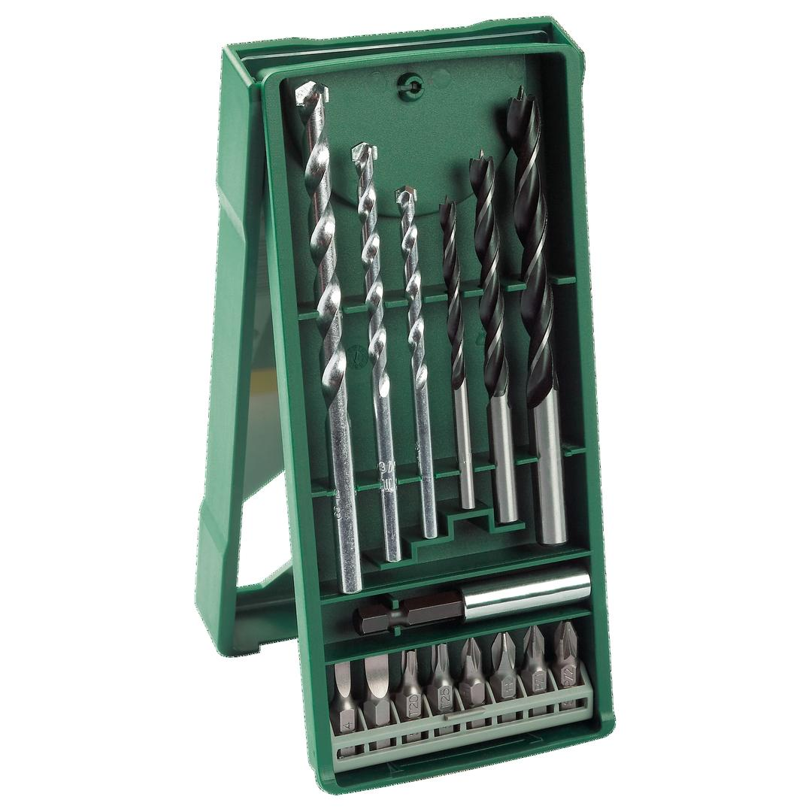
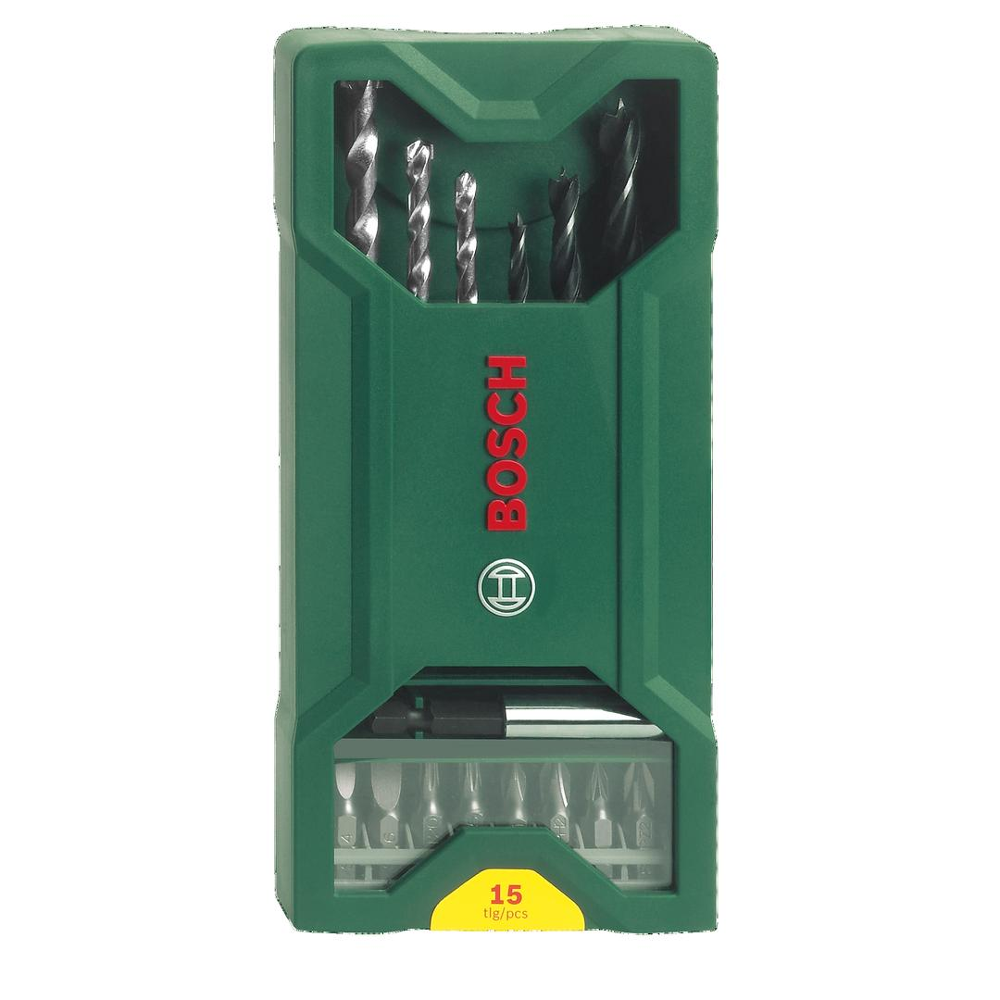

2607019579


| Contents |
3 masonry drill bits, Ø 5/6/8 mm
3 wood drill bits, Ø 4/6/8 mm
8 screwdriver bits, L = 25 mm
PH 1/2
PZ 1/2
S 4/6
T 20/25
1 universal holder, magnetic |
| Packaging |
Plastic box with sticker with Euro hole |
| Dimensions (lxwxh) |
194 x 83 x 21 mm |
| Weight |
0.22 kg |
| Pack quantity |
15 Pcs |
| Minimum order quantity |
1 Pcs |
DIY with Bosch quality: Drilling and screwdriving made easy.